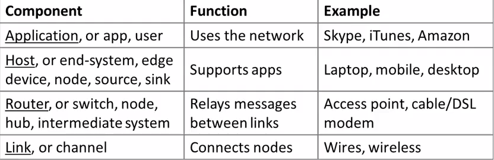
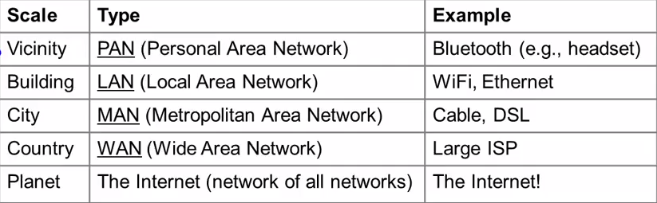
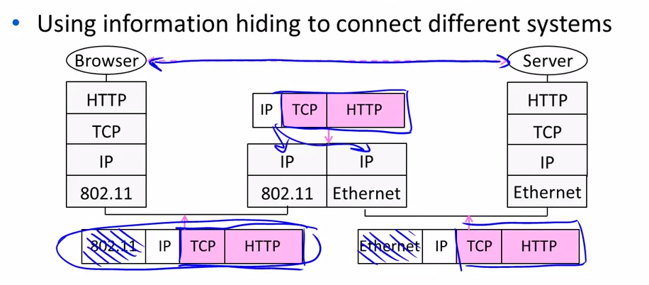
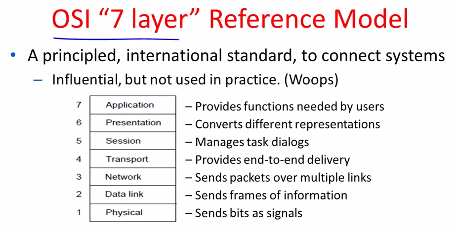
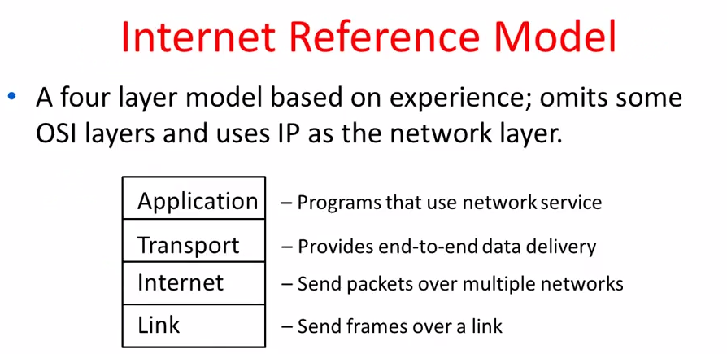

Week 1 Computer Networks
1-1 Goals and Motivation
- distributed systems(apps)
- Networking(packets)
- communications(signals)
Key Motivation : the knowledge will never outdate
1-2 Uses of Networks
- low latency for communication (VoIP)
- More cost effective than dedicated resources per user (Sharing, Statistical Multiplexing)
- Content Delivery, effective than one copy per user (Replicas)
- Computer Communication
- Gather sensor data
- "Metcalfe's Law" :
- The value of a network of N nodesis proportional to $N^{2}$
- Large netwoks are relatively more valuable than small ones
1-3 Network Components
three componets:
- node : host, router
- link : full-duplex, half-duplex, simplex
- app
- exception: wireless link(broadcast)

Types of Network:

1-4 Socktets
Two kinds of network services:
- Streams: reliably send a stream of bytes
- Datagrams: unreliably send seperate messages
1-5 Traceroute
tracert是windows下cmd自带的一条指令，我们可以利用类似于视频中的指令查询packet传递的路径
1-6 Protocal Layers
- protocol and layering is the main structuring method used to divide up network functionality.
- each instance of a protocol talks virtually to its peer using the protocol
- each instance of a protocol uses only the services of the lower layer
- set of protocols in use is called a protocol stack
Then follows:
encapsulation is the mechanism used to effect protocol layering
- lower layer wraps higher layer content, adding its own information to make a new message for delivery.
Demultiplexing is the process of passing incoming message to the protocols that it uses and done with demultiplexing keys in the headers
Adv and Disadv
Advantages
- information hiding and reuse
- using information hiding to connect different systems.
Disadvantages
- adds overhead (but minor for long messages)
- hides information (app might care whether it is running over wired or wireless!)

1-7 Reference Models
Two reference models that decide what functionality will be provided for each layer.


Comments !